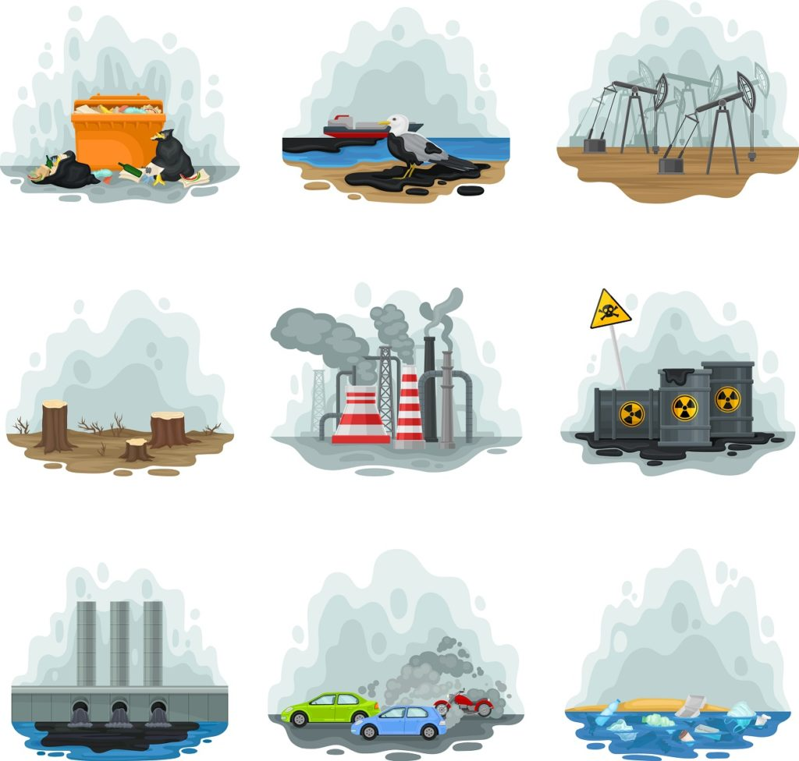
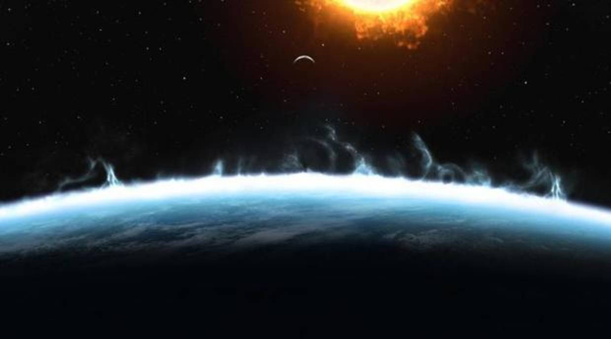
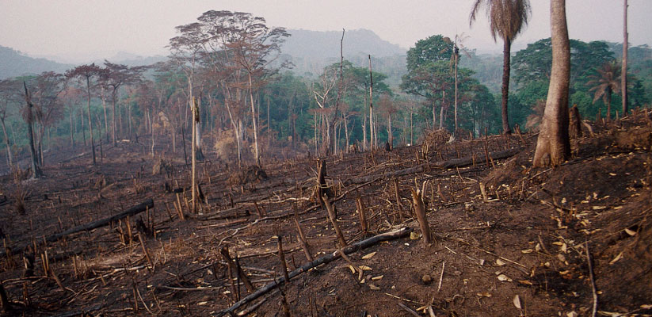
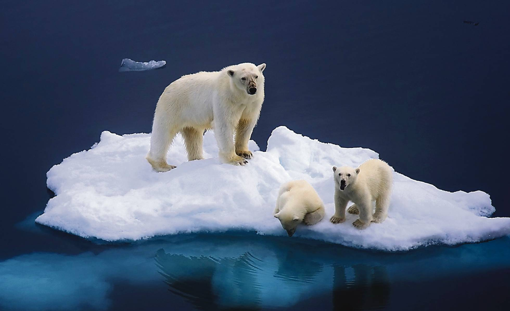

La contaminación cada vez se sale mas de control , a tal grado que si TODOS no hacemos algo al respecto de UNA VEZ, Tendremos un final muyTragico.
Algunas de las consecuencias , serían las siguientes:
Una de las consecuencias mas ovias son los tipos de contaminación que probocariamos, por ejemplo:

Esta consecuencia actualmente está sucediendo Pero de una manera moderada.
Nosotros los humanos nos vemos afectados de diversas maneras por la contaminación ambiental que trastoca nuestro desenvolvimiento diario como, por ejemplo:
Con el paso de los años la capa de ozono se ha ido deteriorando cada vez mas a causa de la contaminación.si esto continua la capa de ozono se destruira por completo y esto conllevará a mas consecuencias. Los seres humanos somos una amenaza para el planeta, las acciones de nuestro día a día hacen que lo dañemos cada vez mas.
La capa de ozono está compuesta por un gas que está presente en la atmósfera y evita que los rayos ultravioleta (UV) lleguen a la superficie de la Tierra. Sin embargo, los altos niveles de contaminación han provocado su debilitamiento y la aparición de un agujero. Esto ha conllevado a la proliferación de diversas enfermedades en humanos, así como efectos negativos en la naturaleza. Por ejemplo, reducción de los casquetes polares o aumentos de las temperaturas.

El equilibrio natural de los ecosistemas se ha visto alterado debido a los altos grados de contaminación en los que vivimos, por tanto muchas especies han desaparecido y otras están por desaparecer debido a:

La lluvia ácida es una precipitación, caída de nieve o rocío tiene altos niveles de ácido nítrico o sulfúrico que contaminan el agua. Surge como consecuencia de la actividad humana (quema de combustible o fábricas), aunque también puede derivarse por la actividad volcánica u otras causas naturales.
La lluvia ácida afecta los suelos, mares, ríos, océanos, lagos, bosques y selvas, por tanto su efecto negativo es amplio en el equilibrio del medio ambiente y el bienestar de la vida en general..
El aumento de la temperatura en la Tierra genera el deshielo de los casquetes polares y la desapareciendo diversas especies propias de esas zonas, altamente vulnerables. Asimismo, conlleva al aumento de los niveles del mar, la desaparición de pequeñas islas, y ya comienza a afectar algunas regiones marítimas de diversos países.

Página Principal